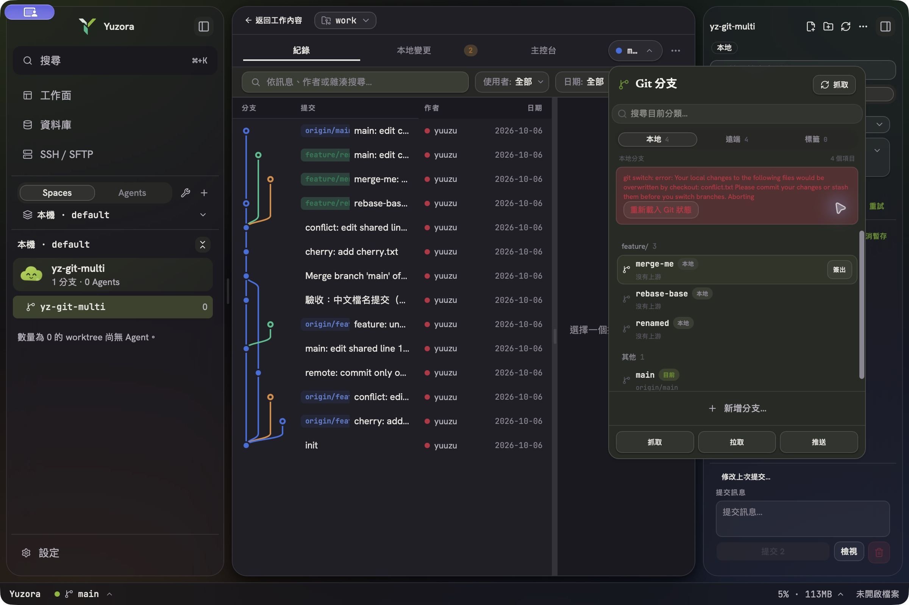
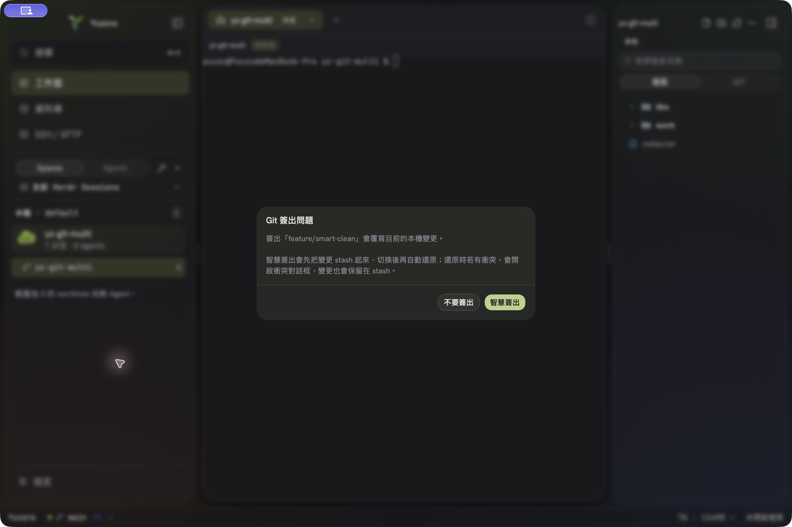
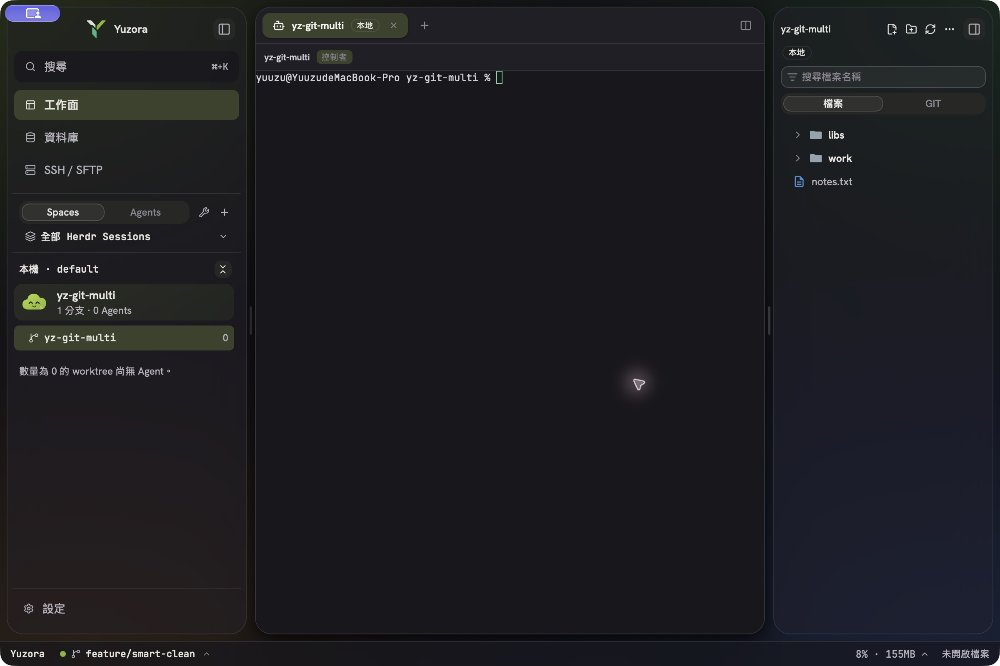
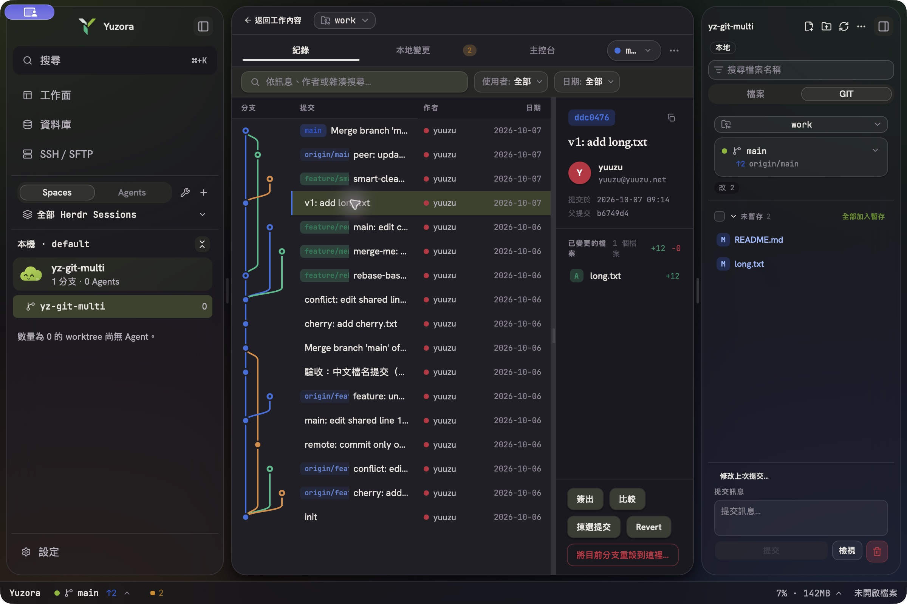
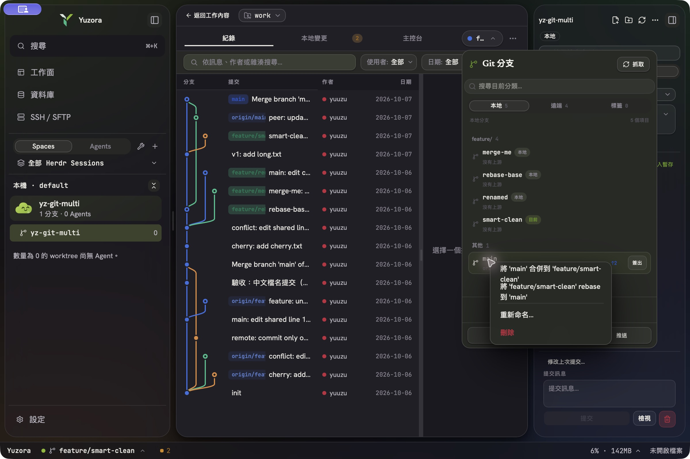
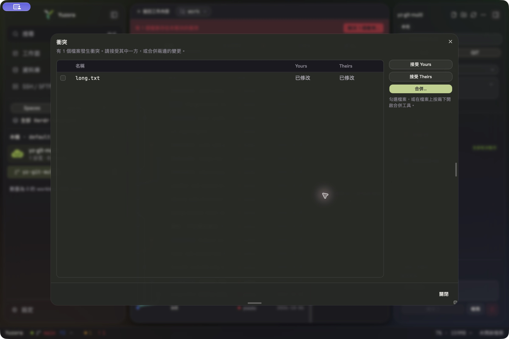
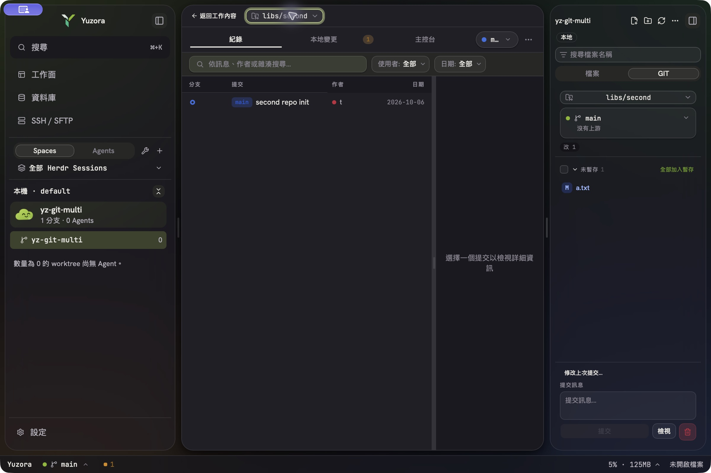
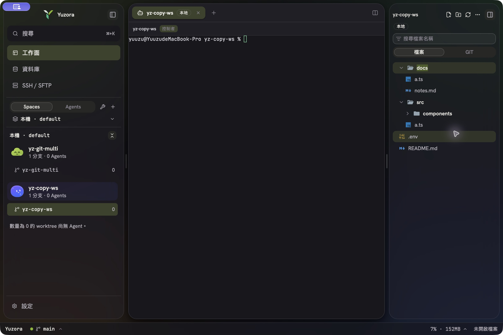
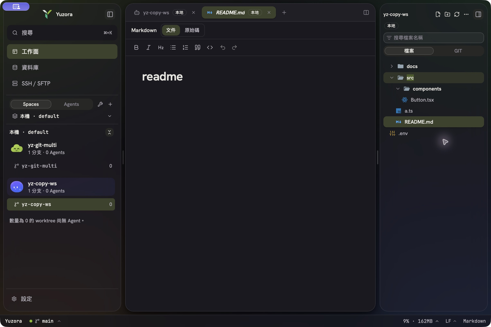
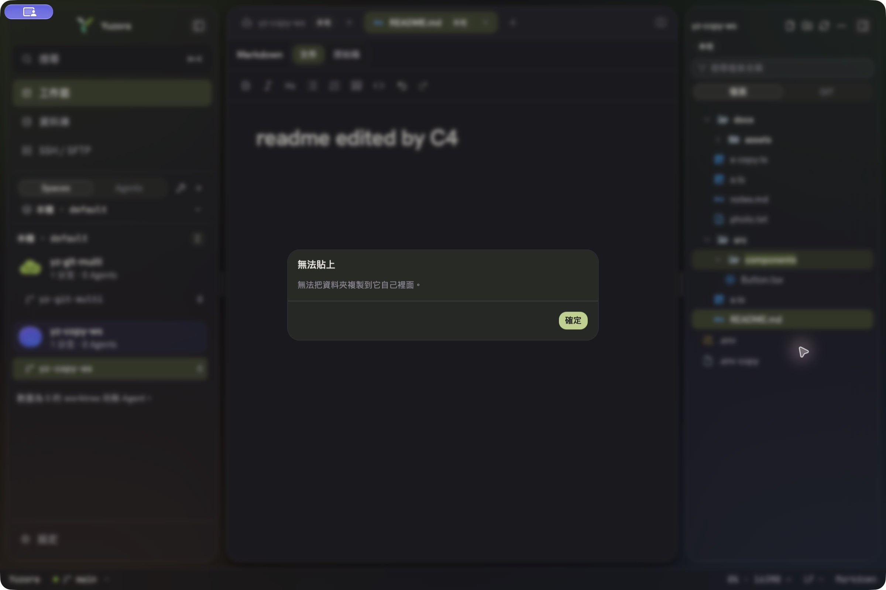

Git／分支 modal／檔案複製貼上 實機驗收
日期：2026-10-07 · 方式：pi-codex-app MCP（macOS native CUA）直接操作 · App：隔離的 Yuzora Acceptance（dev.yuuzu.yuzora.acceptance，HOME／XDG／HERDR socket 全隔離）· 測試資料：/tmp/yz-git-multi、/tmp/yz-copy-ws、GitHub 私有測試倉庫 NakiriYuuzu/yuzora-git-acceptance
Git 常用操作（M1–M14）14 / 14M4、M8、M12 依當下確認後執行
分支 modal 修正（V1–V6）6 / 6髒工作樹下所有操作恢復可用
檔案複製貼上（C1–C8）8 / 8C3 實機找到兩個 bug，修正後重驗通過
隔離／真實 repo 影響0驗收版只連隔離 HERDR server；未碰使用者 repo
分支 modal「點什麼都報錯」根因
使用者的工作樹幾乎總是有未提交變更（本 repo 目前 364 個）。分支 modal 的動作在這種狀態下全部被 git 拒絕：
- 簽出本地分支、簽出遠端為本地分支、簽出 tag／從 tag 建分支 →
error: Your local changes … would be overwritten by checkout。 - Rebase onto（右鍵選單）→ 只要工作樹髒就一律
cannot rebase: You have unstaged changes。 - Merge into current、Pull → 檔案重疊時
would be overwritten by merge（若使用者設了pull.rebase則一律失敗）。 - 另外 Log 的「簽出」把 commit hash 交給
git switch，必定fatal: a branch is expected, got commit（與髒不髒無關）。
修法對齊 JetBrains：簽出遇到本機變更時跳出「Git 簽出問題」→「智慧簽出」（stash → switch → 還原，盡量保留 staged 狀態；還原衝突就開衝突對話框並保留 stash）；Pull／Merge／Rebase 改用 --autostash（merge 類需 git ≥ 2.27）；Log 簽出改為 detached。
逐項結果
分支 modal 修正（髒工作樹）
| 項目 | 結果 | 步驟與證據 |
|---|---|---|
| V0 | 修前 | staged 變更下點分支 modal 的「簽出」→ 紅色錯誤 git switch: error: Your local changes … overwritten by checkout；遠端分支「簽出為本地分支」同錯。（圖 1） |
| V1 | PASS | long.txt staged WIP → 簽出 feature/smart-clean → 出現「Git 簽出問題」→ 智慧簽出 → 切換成功，分支的第 1 行與本機第 12 行並存、仍為 staged、未殘留 stash。（圖 2、3） |
| V2 | PASS | 同伴 clone 推一個改 README 第 C 行的 commit；本機 README 第 A 行有 WIP → modal「抓取」→「拉取」→ 產生 merge，WIP 與遠端修改並存、無殘留 stash（autostash 不保留 staged 狀態，與 git／JetBrains 相同）。 |
| V3 | PASS | Log 選 ddc0476 →「簽出」→ 智慧簽出 → HEAD (no branch) 於 ddc0476，WIP 還原。（圖 4，重設按鈕已無鎖頭圖示） |
| V4 | PASS | modal 右鍵 main →「將 'feature/smart-clean' rebase 到 'main'」→ 確認 → 成功，WIP（README、long.txt）保留。（圖 5） |
| V5 | PASS | 本機改 long.txt 第 1 行（與目標衝突）→ 智慧簽出 main → 自動開啟衝突對話框（long.txt），stash「Yuzora smart checkout」保留 → 接受 Theirs 後解決。（圖 6） |
| V6 | PASS | modal 右鍵重新命名 feature/merge-me → feature/merge-me-v2，Log 的分支標籤立即更新。（首次嘗試失敗是 CUA 的 End 鍵輸入了 \x04 控制字元，git 正確拒絕；非 App 問題。） |
Git 常用操作（M1–M14）
| 項目 | 結果 | 步驟與證據 |
|---|---|---|
| M1 | PASS | 非 repo 根目錄 yz-git-multi 列出 libs/second、work 兩個巢狀 repo。 |
| M2–M3 | PASS | 前一輪完成（stash 建立、分支重新命名）。 |
| M4 | PASS | 刪除未合併分支 → 「尚未完全合併」→ 強制刪除（使用者當下確認）。 |
| M5 | PASS | Merge 衝突 → 衝突對話框 → 三窗格合併工具 → Both → Apply → Continue → 8e020e0。 |
| M6–M7 | PASS | Revert → d38d72f；復原 commit（soft reset，變更留在暫存區）。 |
| M8 | PASS | Hard 重設（使用者當下確認）。 |
| M9 | PASS | Rebase 衝突 → Skip。 |
| M10–M11 | PASS | Pull（rebase）；Push（含 tags）→ 遠端 0d01be7。 |
| M12 | PASS | 強制 Push（with lease，使用者當下確認）→ 遠端 main 由 0d01be7 回到 b6749d4（ls-remote 核對）。 |
| M13 | PASS | Stash 對話框：輸入訊息 →「Stash 變更」→ 工作樹乾淨；「套用」→ 變更還原、條目保留。Pop／刪除屬刪資料動作，本輪未在 GUI 執行（單元測試涵蓋）。 |
| M14 | PASS | repository 選擇器 work ↔ libs/second：Log、狀態、變更清單同步切換。（圖 7） |
檔案複製貼上（C1–C8，/tmp/yz-copy-ws）
| 項目 | 結果 | 步驟與證據 |
|---|---|---|
| C1 | PASS | 右鍵 src/a.ts「複製」→ OS 剪貼簿為 /private/tmp/yz-copy-ws/src/a.ts（可貼到 Finder）→ 右鍵 docs「貼上」→ docs/a.ts，docs 自動展開。（圖 8） |
| C2 | PASS | 再貼一次 → docs/a copy.ts。 |
| C3 | PASS | 鍵盤 Cmd+C／Cmd+V。實機找到兩個 bug：① WebKit 點擊 button 不給焦點，按鍵到不了樹；② macOS 預設 Edit 選單攔走 Cmd+C／X／V，頁面收不到 keydown（Cmd+D 可用即為對照）。已修：點擊時主動 focus 列；改監聽 beforecopy／copy／cut／paste。重建後：點 src/components → Cmd+C（OS 剪貼簿為該資料夾）→ 點 docs → Cmd+V → docs/components/Button.tsx；Cmd+X 檔案列 → Cmd+V 亦正確移動（點檔案列開預覽分頁後焦點仍留在樹）。 |
| C4 | PASS | 開啟 README.md 分頁 → 剪下（列變淡）→ 貼到 src → 根目錄 README 消失、分頁跟著指向新路徑且無錯誤 → 編輯 + Cmd+S 寫入 src/README.md，根目錄未被重建。（圖 9） |
| C5 | PASS | 右鍵 .env「製作副本」→ .env copy（內容相同）。 |
| C6 | PASS | Finder 剪貼簿放 photo.txt 與 assets/ → 貼到 docs → 檔案與資料夾（含兩個 svg）出現，外部來源未變。 |
| C7 | PASS | 複製 src → 貼到 src/components →「無法貼上：無法把資料夾複製到它自己裡面。」檔案樹前後 diff 為空。（圖 10） |
| C8 | PASS | App 內剪下 docs/notes.md（OS 剪貼簿同步為 notes.md）→ 之後 Finder 複製 photo.txt → 貼到 src → 得到 src/photo copy.txt（Finder 優先），notes.md 未被移動。 |
截圖










本輪修正清單
- 智慧簽出：
git_checkout／git_create_branch／git_checkout_detached新增smart（本機與 SSH host 共用switch_keeping_changes）；前端switchBranch偵測錯誤後詢問。 - Pull／Merge／Rebase
--autostash（merge 類依 git 版本 ≥ 2.27）。 - Log「簽出」commit 改 detached（原本必定失敗）。
- 重新命名／刪除分支後重載 Log 的 ref 標籤。
- 重設按鈕移除舊設計的鎖頭圖示與「按住以重設」提示；Skip 確認按鈕文字改為「跳過」。
- 檔案樹：點擊列取得焦點；macOS 改經 Edit 選單的剪貼簿事件處理 Cmd+C／X／V。
限制與後續
- 智慧簽出只處理「追蹤檔會被覆寫」；未追蹤檔擋住簽出時仍顯示 git 原文。未提供 JetBrains 的「強制簽出」（會丟棄變更）。
- git 2.24–2.26 的 merge／pull（merge 模式）沒有 autostash，重疊時仍會失敗。
- 遠端 workspace 不支援從 Finder 匯入；SFTP 工作區不支援複製／移動；多 repo 只監看作用中的 repo。
- Stash pop／drop 屬刪除動作，本輪未在 GUI 執行（Rust／前端單元測試涵蓋）。
自動化驗證
- Rust host：538／538（兩個既有時序敏感測試在 build 負載下失敗，單獨重跑通過）；新增智慧簽出 3 項、autostash 1 項，更新 pull 參數 2 項。
- 前端：vitest 全套 296 檔 3621 通過；新增智慧簽出流程 2 項、檔案樹焦點與 Edit 選單剪貼簿事件 2 項（焦點測試在拿掉修正時會失敗）。
src-tauri：cargo test458 通過。全套並行時抓到concurrent_status_reads…偶發失敗：stage 的「仍有衝突標記」前置檢查原本跑完整git status，改為只讀 index 的git ls-files --unmerged後全套通過。cargo check --all-targets、cargo fmt --check、clippy baseline（19 筆相符）、bun run typecheck、eslint src（0 error）通過。
本報告只寫入驗收交付檔與 /tmp 測試資料；未在使用者 repo 執行任何 git 寫入（add／commit／push）。